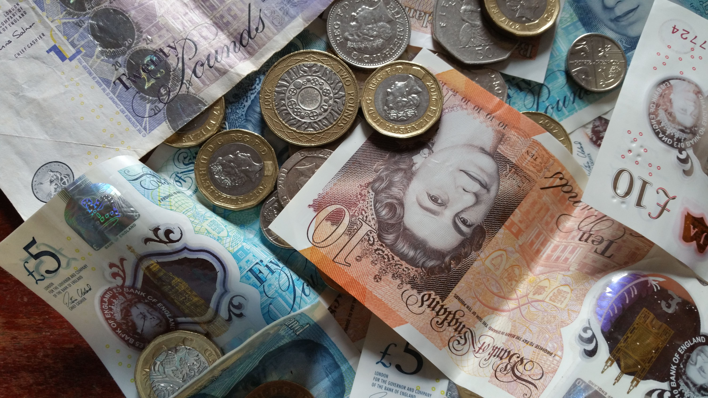

"To eat a vegan diet would be far, far more expensive, more so than I can afford.”
As I looked at my phone screen and read these words I felt only one thing. Bemusement. It was the fourth time in as many weeks that a conversation I'd been having online had produced such a response. Clearly the argument that being vegan is too expensive is a growing one. Is there truth to this argument though? Just how expensive is it to go vegan?
Fortunately this is a question that already has an answer. In November 2021 Oxford University published the results of a global study into food costs that ranked and compared different types of diets, including fully plant-based (vegan) diets. It was already known that plant-based diets are healthier and more sustainable, being associated with lower rates of diet-related mortality and performing better across the board environmentally - requiring less resources, producing fewer greenhouse gasses, and so on - but it wasn’t known precisely what the costs to the consumer would be.
The results of the study showed that in high-income countries such as the USA, the UK, Australia, and all across Western Europe, vegan diets were the most affordable and reduced costs by up to one third, with vegetarian diets being a close second. This means that for a typical family living in the UK who currently spends around £160 per week on food shopping, they could save around £2,750 a year by switching to all vegan eating. This simple change could have profound impacts on people's quality of life given the ongoing cost of living crisis.
The researchers also chose to explore a fuller cost accounting model that factored in health-care, food waste, and relevant environmental costs into the equation. When averaging this new cost on a global scale they found vegan and vegetarian diets to be 37% lower. It was ultimately concluded that even in lower-income countries where the cost of vegan diets was less favorable than high-income countries, vegan diets will still pull ahead in savings in the near-future, especially considering the aforementioned socioeconomic factors.
Saving £2,750 every year by switching to a vegan diet sounds like a superb opportunity for consumers like you and I, but those other socioeconomic factors touched on by the previous study piqued my curiosity enough to explore further. A more recent analysis published in January 2024 revealed that if 100% of the people living in England adopted a vegan diet it would save the NHS £6.7 billion a year. Now we’re talking. That’s an estimated £121 million of healthcare savings for every million people who decide to go vegan. If we all did it, the £6.7 billion is enough to cover the full yearly budget of seven hospitals, or the annual salaries of 184,920 nurses.
Of course, we can’t talk about food costs without also mentioning subsidies. I think this actually goes a long way in explaining where the misconception about animal products being so cheap comes from. It’s true of course that you can eat meat very cheaply - the high-street is full of predominantly non-vegan in-expensive fast food - and that trying to opt for healthier options like fresh fruit and produce often comes with a higher price tag. In reality though, the price we pay at the point of sale doesn’t tell the full story.
Subsidies, which are financial benefits paid to industries by the government, hide from us the true cost of the foods we purchase. In the UK, DEFRA reports that around 90% of the profits made by ruminant animal farmers come from subsidies. Conversely, only around 10% of fruit farmers' profits come from subsidies. In other words, our tax money is used to make animal products seem cheaper than they really are. Part of the cost comes directly out of our wages in the form of taxation.
Thankfully the number of people choosing to boycott animal products has been rising rapidly for years, as has the number of people choosing to consume less. As subsidies are a finite resource and need to be allocated where they will most benefit society, this means we should see animal farming being subsidised less in favour of more subsidies to plant farming as time goes on. When animal products aren’t being propped up so heavily by our taxes, their point of sale price will more accurately reflect the cost of production.
My search for an answer as to why people keep telling me “veganism is too expensive” was becoming desperate. I suddenly remembered a popular proverb - “time is money” - and thought perhaps I could lean on this to sympathise with the anti-vegan sentiment. Maybe being vegan is simply too time consuming? Alas, in my preparation for writing this article I’d come across more research into the costs of vegan diets which coincidentally had also looked at the time it takes to prepare vegan meals, finding them to require one-third less. Perhaps it was my veganism that had allowed me the free time to write this in the first place…
Speaking of time, what a waste of it this has been. It was always a foregone conclusion. Everyone already has experiential knowledge that being vegan is cheaper. We know lentils are cheaper than chicken. We know what food costs, and that animal products are often some of the more pricey items on our shopping lists. We also know that animals need to eat too. By growing plants to feed animals, rather than growing plants to feed ourselves, we’re wasting energy. All these things are obvious, but having well researched studies and statistics to back up what we already know doesn't hurt.
No matter what angle I look at it, saying “veganism is too expensive” seems nothing more than an excuse used to dodge personal accountability.
I’ve made my case that it's actually animal products - meat, dairy, eggs - that are "too expensive", not veganism, but despite bringing evidence to the table I’m actually going to have to flip that table, and say I don’t even agree with the studies I’ve cited. No, really. I think they do not give an accurate representation of the true expense of non-vegan diets: innocent animal lives. Animals are given one life, and they spend it in misery on modern factory farms before having it violently snatched from them in slaughter houses so they can end up on our dinner plates. That is a price none of us should be willing to pay.